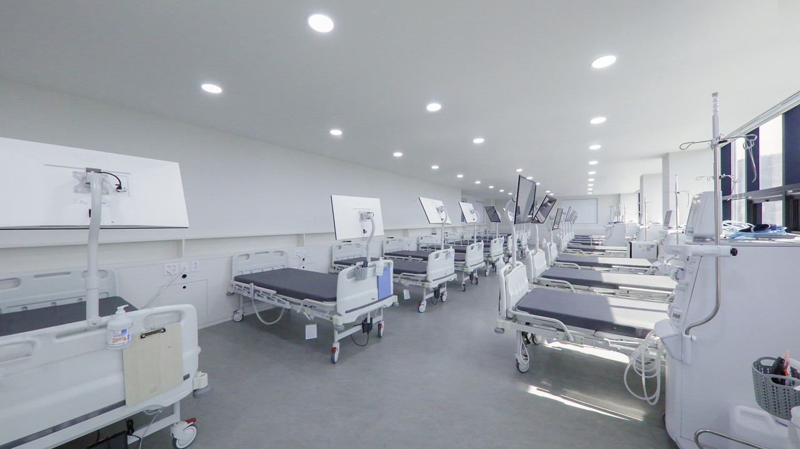
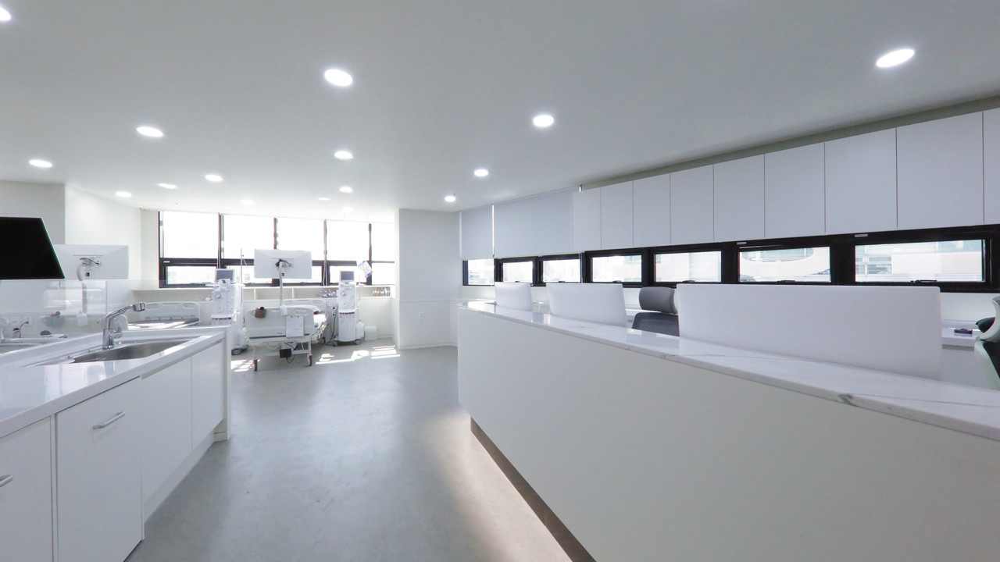
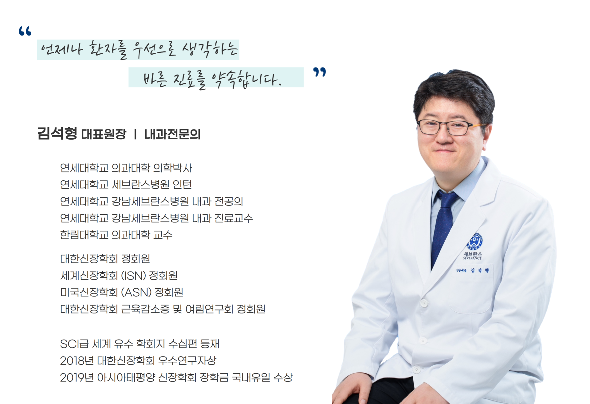

우리 동네, 면목연세석내과
면목동 내과 진료,
면목연세석내과.
중랑구 면목동에서 만나는 내과 진료.
만성질환 관리부터 신장질환, 혈액투석까지
진료 분야와 방문 방법을 확인하세요.
서울 중랑구 면목로 398, 스마트빌딩

OUR CARE
면목동 내과 진료를 안내합니다.
내과 진료부터 검사까지,
필요한 진료 분야를 확인해 보세요.
만성질환 관리
고혈압 · 당뇨병 · 고지혈증
일상 속 꾸준한 건강 관리
신장질환 · 혈액투석
신장질환 · 만성신부전 진료
5·6층 인공신장실 운영
일반 내과 진료
소화기 · 호흡기 · 내분비
다양한 내과 질환 진료
초음파 · 건강검진
초음파 검사 및 건강검진
검사 항목과 일정은 전화 문의
검사와 진료 가능 항목은 방문 전 병원에 문의해 주세요. 02-437-0808
YOUR NEIGHBORHOOD CLINIC
중랑구 내과를 찾으신다면,
방문 전에 확인하세요.
진료 분야, 외래시간, 의료진과 위치를
한 페이지에서 살펴보실 수 있습니다.
KIDNEY CARE
신장 건강을 살피는
인공신장실
면목연세석내과는 신장질환 진료와 함께
스마트빌딩 5·6층에 인공신장실을 운영합니다.

LOCAL DIALYSIS GUIDE
면목동·상봉동·망우동에서
방문을 준비하신다면.
병원은 중랑구 면목동에 있습니다.
위치와 상담 준비 사항을 먼저 살펴보세요.

MYEONMOK YONSEI SEOKMEET YOUR DOCTOR
의료진을 소개합니다.
김석형대표원장 · 내과 전문의
연세대학교 의과대학 의학박사
대한신장학회 정회원
세계신장학회(ISN) 정회원
의료진의 자세한 약력과 병원 소개는
공식 홈페이지에서 확인하실 수 있습니다.
PLAN YOUR VISIT
방문 전에 확인하세요.
진료시간
CONSULTATION HOURS| 월요일 ~ 금요일 | 08:30 – 20:00 |
|---|---|
| 토요일 | 08:30 – 16:00 |
| 점심시간 | 13:00 – 14:00 |
| 일요일 · 공휴일 | 휴진 |
접수 마감, 검사 및 투석 일정은 전화로 확인해 주세요.
GOOD TO KNOW
자주 찾는 안내
궁금한 점은 병원으로
편하게 문의해 주세요.
외래 진료와 인공신장실은 몇 층인가요?
외래 진료는 스마트빌딩 2층, 인공신장실은 5·6층에 있습니다. 주소는 서울특별시 중랑구 면목로 398입니다.
혈액투석 일정은 어떻게 확인하나요?
투석 일정과 상담은 병원 전화 02-437-0808로 문의해 주세요. 이 페이지의 외래 진료시간과 별도로 확인이 필요합니다.
일요일과 공휴일에도 진료하나요?
안내된 외래 진료시간 기준으로 일요일과 공휴일은 휴진입니다. 임시 휴진 등 변경 사항은 방문 전 병원에 확인해 주세요.
STAY CONNECTED